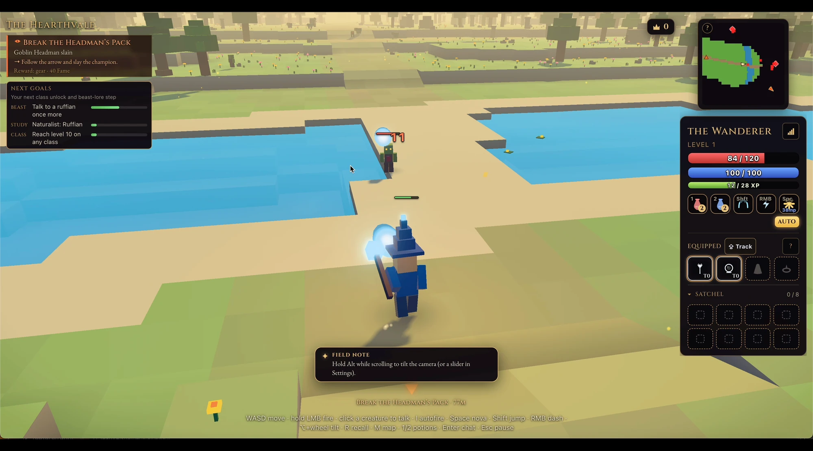
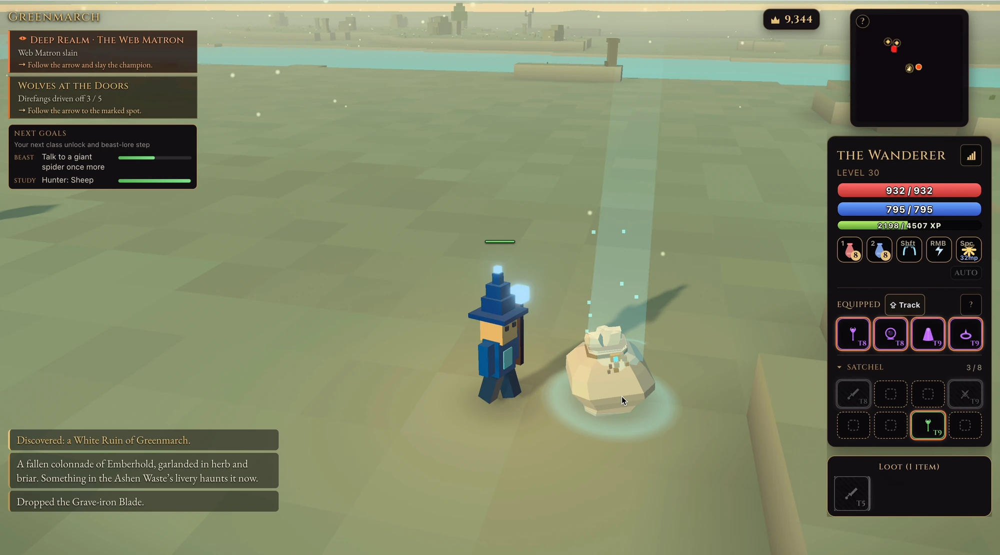
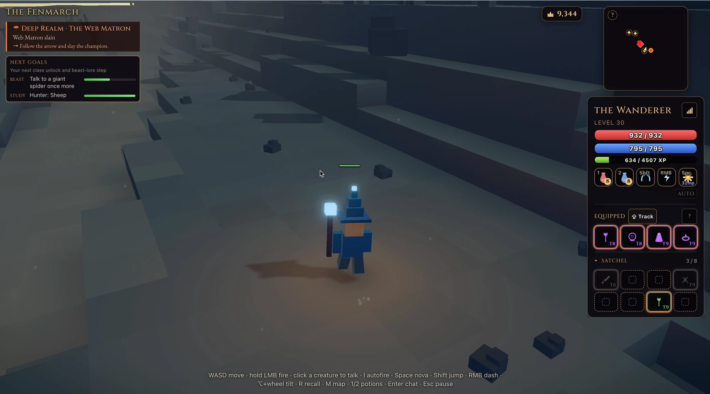
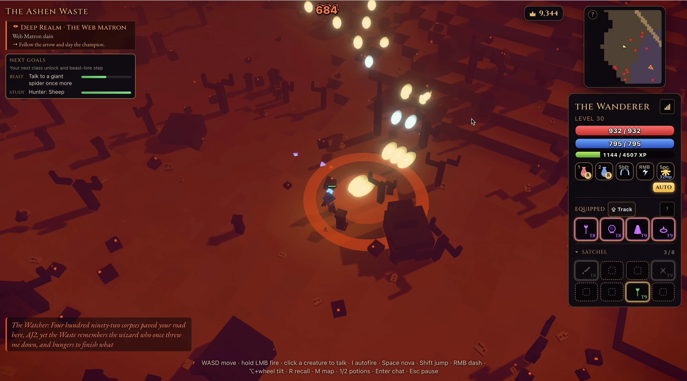
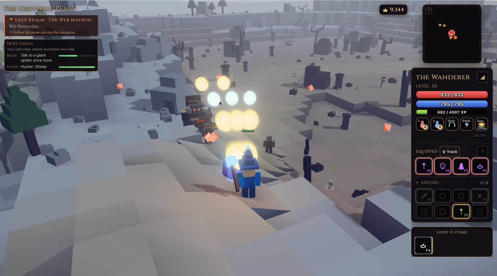
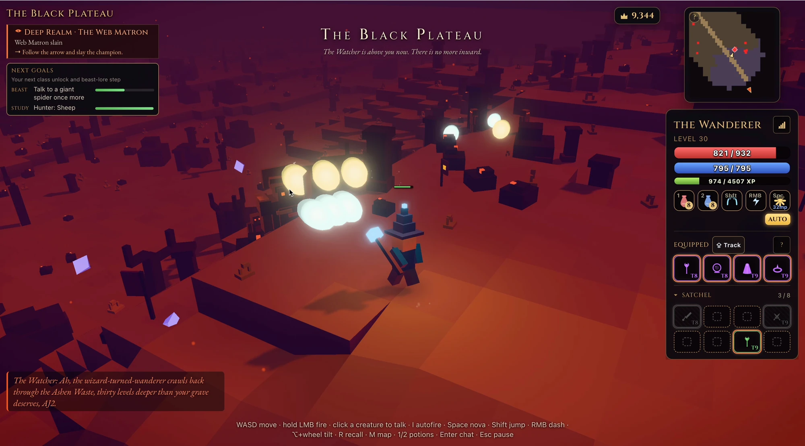

Constraint
Every player needs the same world state, including quests, loot and combat, while the browser remains a responsive renderer.
CASE / Voxel MMORPG
Browser-based voxel MMORPG. Designed, built, and in production.

HOW IT HOLDS UP
Designed, built and put the web tier and authoritative realm service into production.
Every player needs the same world state, including quests, loot and combat, while the browser remains a responsive renderer.
Keep simulation in a separate realm service and use Colyseus rooms over WebSocket to distribute authoritative state to the three.js client.
Live without install: seven regions and realms that hold up to 64 players.
SELECTED PROOF
RECORDED STATES








KEEP READING